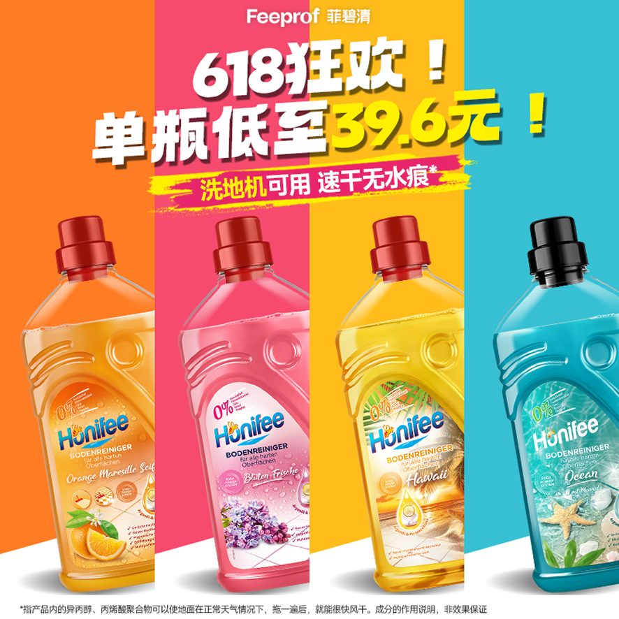
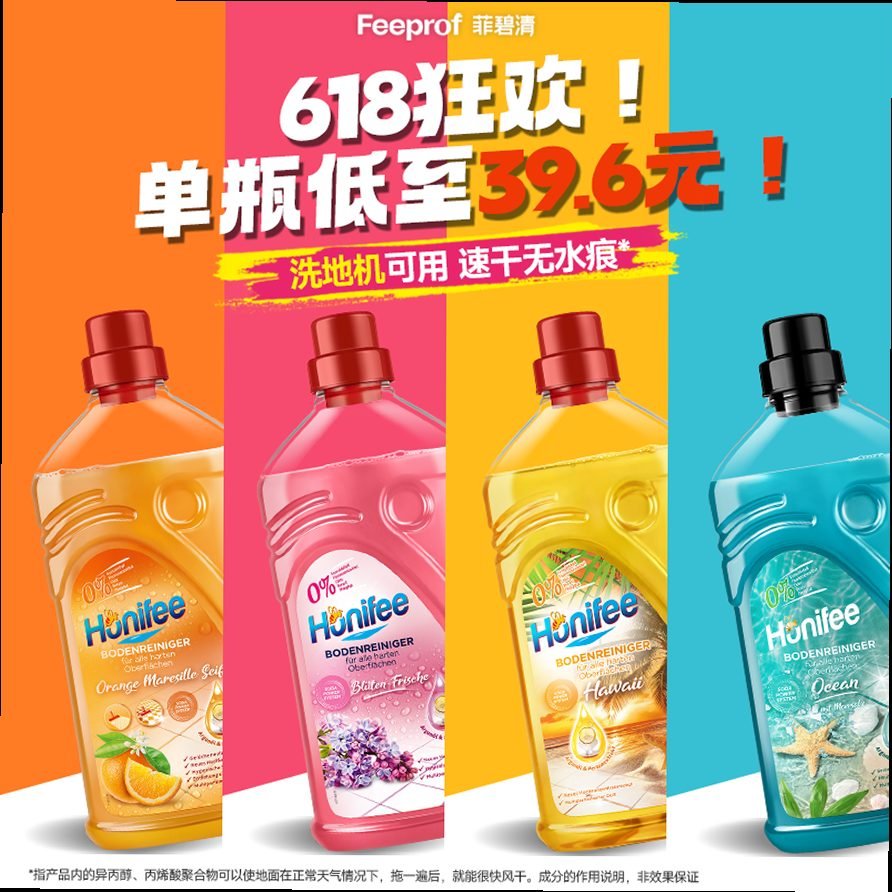
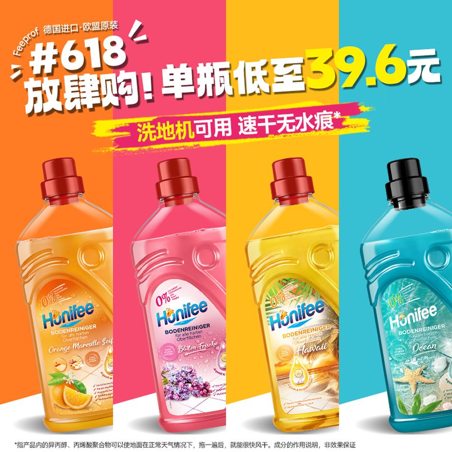
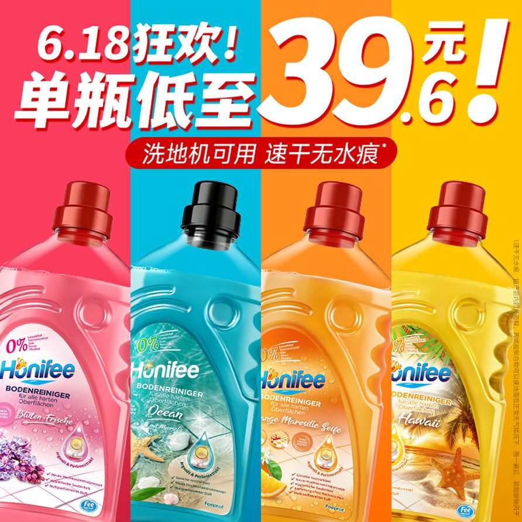
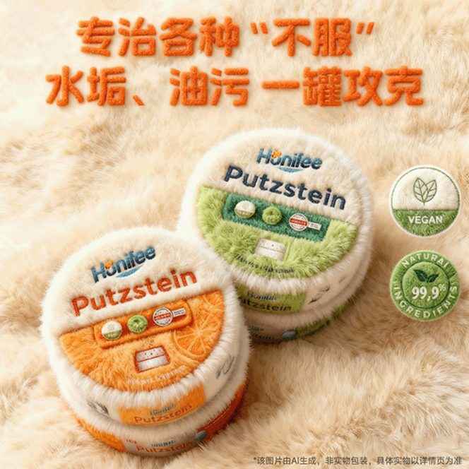
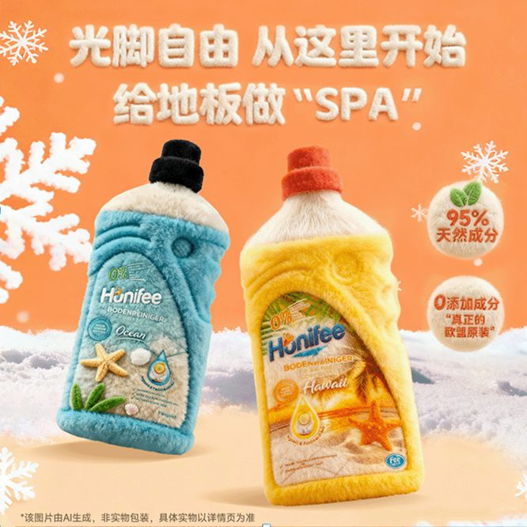
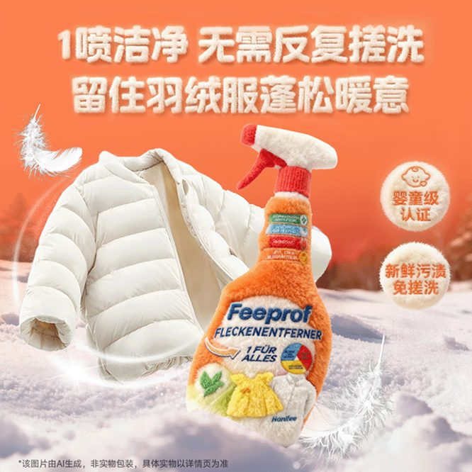
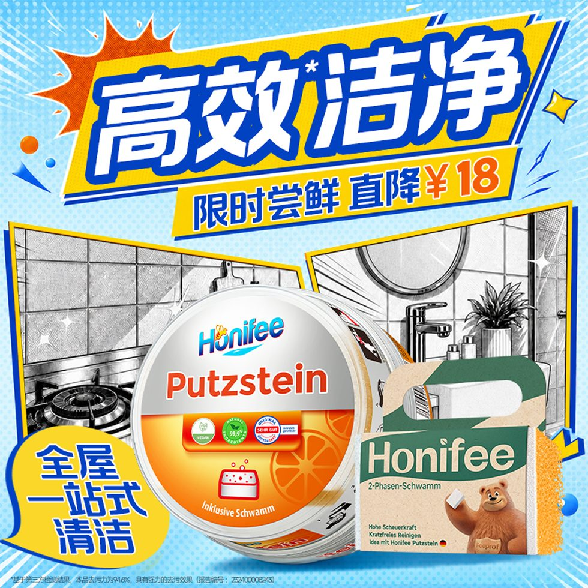
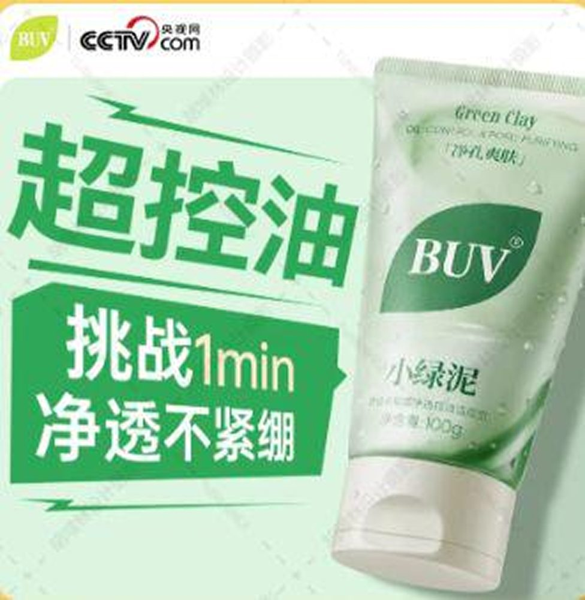
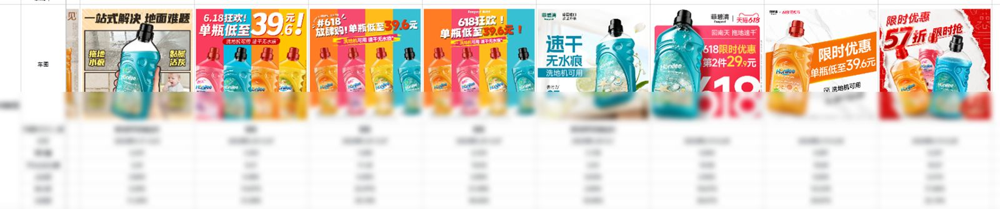

AI Batch-generated Ad Creatives







Feeprof is a German home-cleaning and personal-care brand for families with babies and pets, average order about 90 RMB. I handled the ad creatives for Tmall, JD and Pinduoduo. The pain: creatives were retouched by hand one at a time, a few per three days, no way to test multiple versions. With AI, it became batch generation and selection through ad testing.
How it works
- Set up categories first: selling point, creative angle, audience, theme, campaign, color
- Find matching viral hero images and ad creatives by category
- AI breaks down the viral creative in detail and writes a separate prompt for each image in the brand's tone
- Remake into versions A, B, sometimes C
- Human screens and reviews; wrong generations are adjusted, final touch-ups done on the image
- Run several versions together, pick the winner from the backend data
- The winner goes back into the category library and is remade again in the next round
One viral creative, many versions
Market reference on the left, versions remade in the brand's tone on the right. Only the structure and creative angle are borrowed; product, scene and copy are all redone.












Ad testing
Same ad slot, same keyword, same three days, three versions run together, data decides.
2026.5.25 – 5.27 · Pinduoduo ads backend · three versions on the same keyword at the same time. Version B's CTR matched A, conversion rate was 50%+ higher, kept for the next round.

Results
Same three days: 5 retouched → 15 batch-generated into testing
In the same test, the winning version's conversion rate was 50%+ higher than the lowest.
Tools
Midjourney · ComfyUI · GPT Image · Jimeng · Photoshop